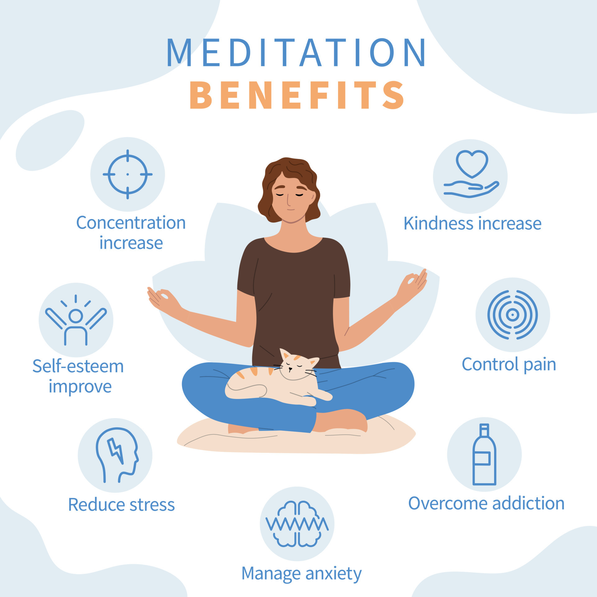

Yoga & Meditation – A Perfect Union
Bringing Mind & Body Together
Yoga and meditation are two deeply connected practices that support and enhance each other. While yoga prepares the body through movement and breath control, calms the mind, allowing for deep inner awareness. Together, they create a holistic path to well-being. Meditation can reduce stress, improve focus, increase emotional resilience, and promote a greater sense of inner peace. These mental and emotional benefits complement the physical strength and flexibility gained through yoga. When practiced together, they offer a powerful synergy for total mind-body harmony.
Yoga: A Path to Meditation
Yoga is more than just physical exercise—it’s a practice that aligns the body, breath, and mind. By moving through postures (asanas), we release tension, improve flexibility, and strengthen the body. This preparation makes it easier to sit still and meditate without discomfort. Many ancient yogic traditions describe yoga as a stepping stone to deep meditation.Meditation sharpens focus, reduces stress, and cultivates mindfulness, all of which can enhance a yoga practice. By meditating before or after yoga, we bring a deeper level of awareness to our movements, breath, and emotions. This mindful connection transforms yoga from a simple workout into a moving meditation.
A Soundtrack for Stillness
Meditation music can be a powerful tool for deepening focus and relaxation during your practice. Soft ambient sounds, nature recordings, or gentle instrumental tracks help create a calming atmosphere that supports mental stillness. The rhythmic flow of meditation music can guide your breath, ease anxiety, and quiet distracting thoughts. It acts as an anchor, helping you stay present when the mind begins to wander. Many people find that music enhances their ability to enter a meditative state more quickly. Whether you're practicing seated meditation, breathwork, or even a slow yoga flow, the right soundtrack can elevate the entire experience.
Start Your Journey Today
By combining yoga and meditation, you can achieve a greater sense of balance, clarity, and well-being. Whether you’re new to the practice or experienced, integrating both can elevate your physical and mental health. Take a deep breath, move with intention, and find stillness within.